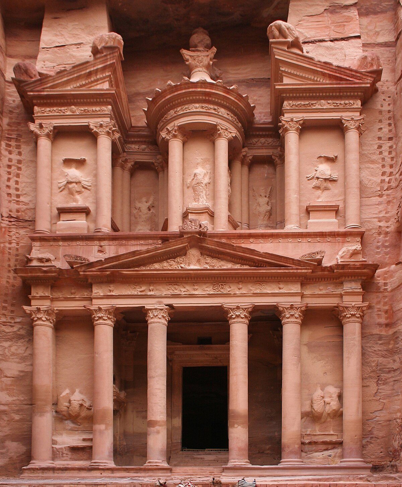

Petra is situated in a basin among the mountains that form the eastern flank of the Arabah valley running from the Dead Sea to the Gulf of Aqaba. The site remained unknown to the Western world until it was rediscovered by Swiss explorer Johann Ludwig Burckhardt in 1812.
Favorite drink
your hobbies